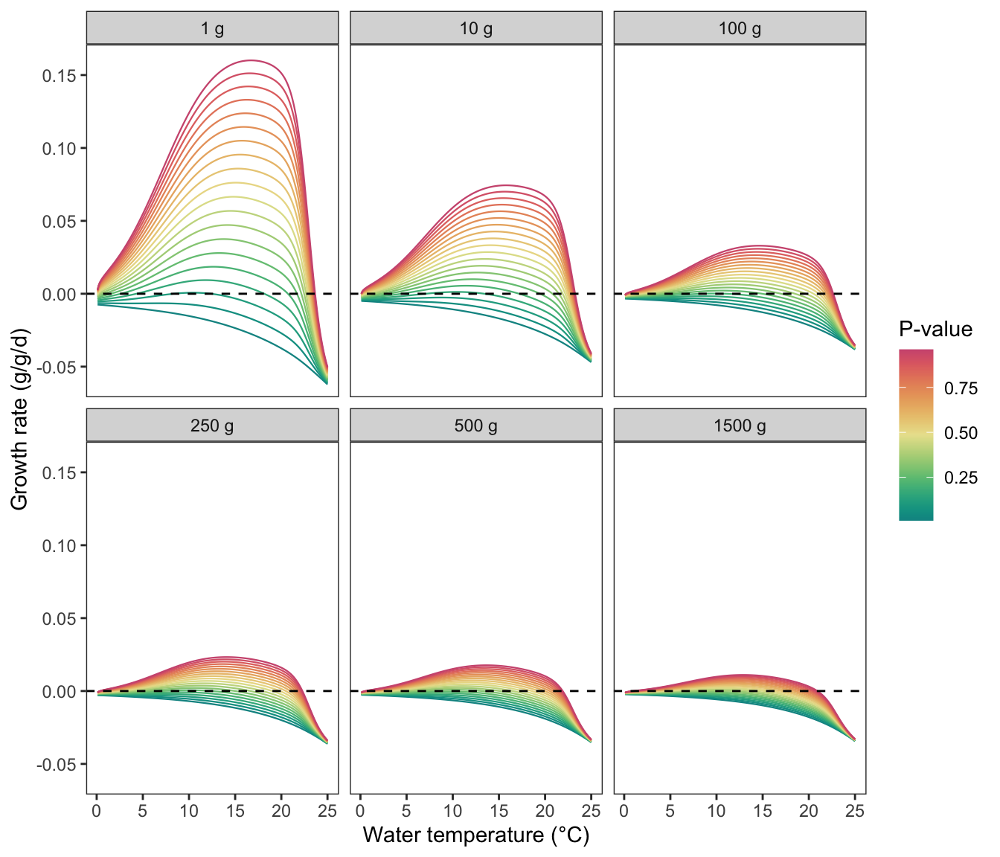
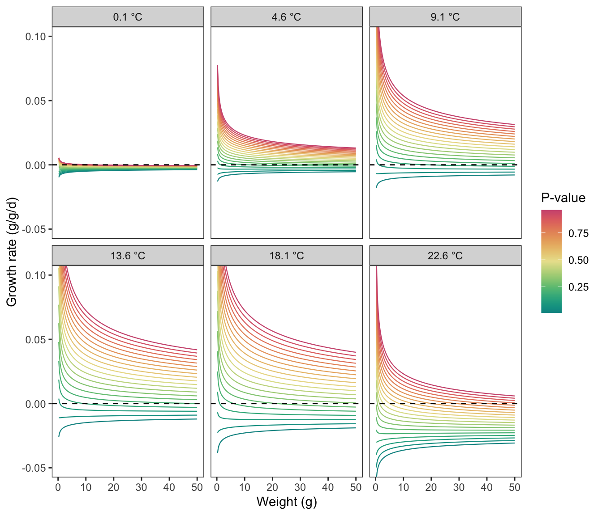
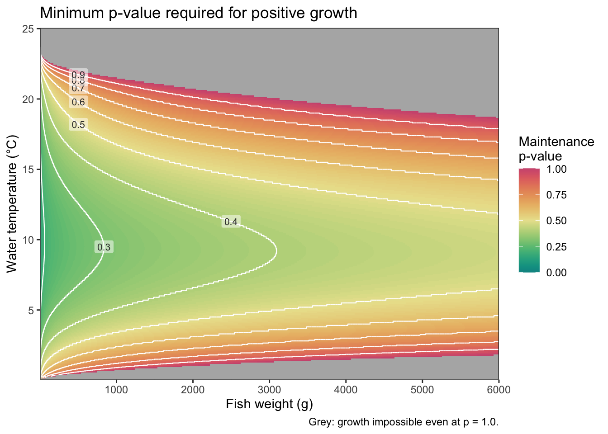
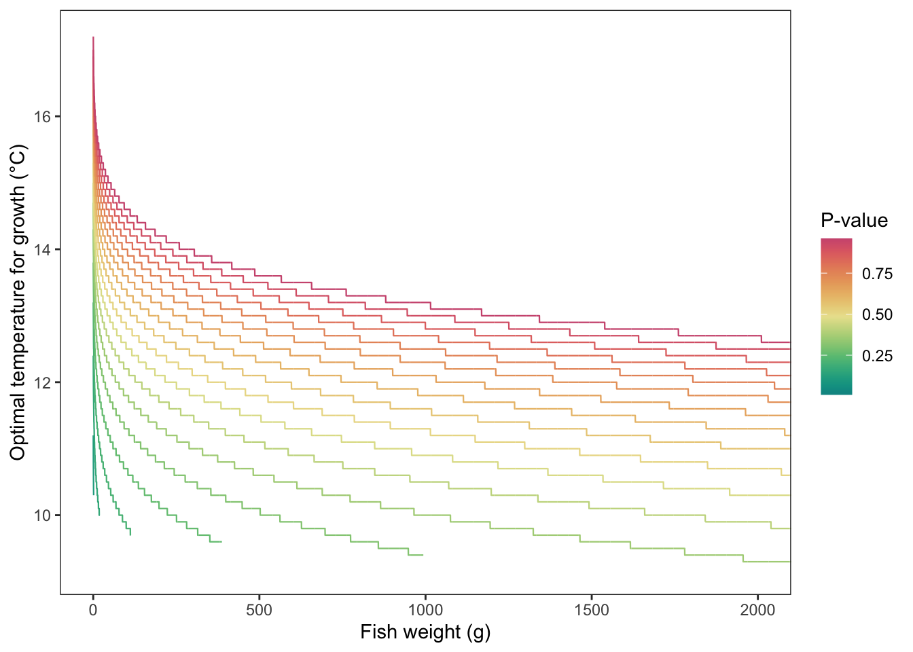
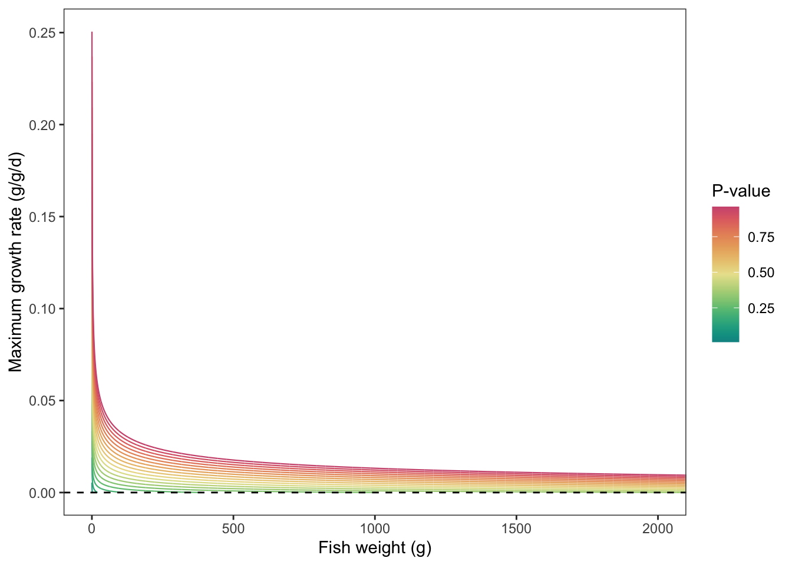
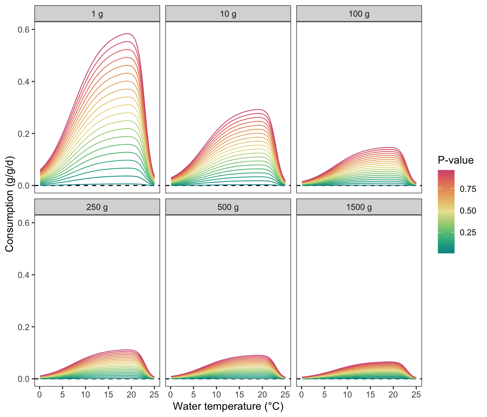
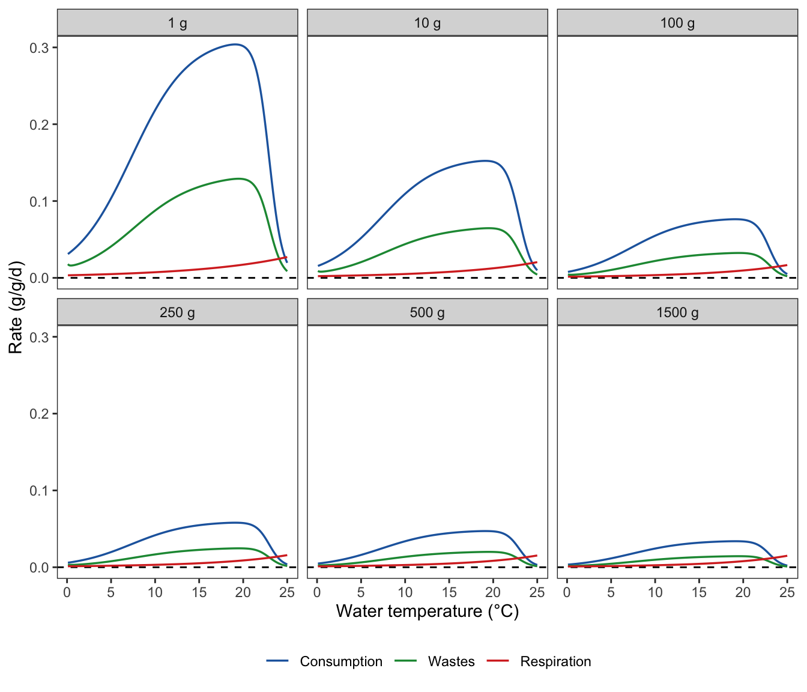
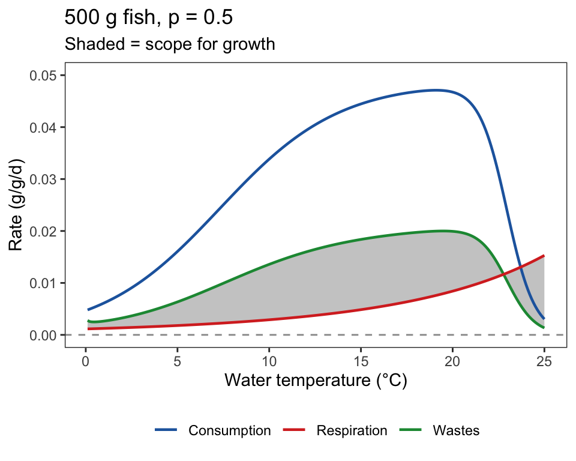

Code
Constants <- fncReadConstants()
pred.en.dens <- 5900 #predator energy density
oxy <- 13560 #oxygen consumed
pff <- 0.1 #percent indigestible prey
prey.en.dens <- 3500 # see Railsback and Rose 1999, Beauchamp et al. 2007Purpose: Precalculate growth to look-up growth rates based on weight, temperature, and p-value (proportion of temperature-adjusted maximum consumption).
Source dependencies
Set parameters for O. mykiss
Constants <- fncReadConstants()
pred.en.dens <- 5900 #predator energy density
oxy <- 13560 #oxygen consumed
pff <- 0.1 #percent indigestible prey
prey.en.dens <- 3500 # see Railsback and Rose 1999, Beauchamp et al. 2007Set up arrays. Sequences must match the lookup sequences defined in fncGrowthFish(), fncGrowthPossible(), and the IBM simulation loop.
waterTemps <- cbind("pid" = seq(1, length(seq(0.1, 25, 0.1))), "WT" = seq(0.1, 25, 0.1))
pvals <- seq(0.01, 1.0, 0.01) # p-value (100 values)
weights <- seq(0.25, 6000, 0.25) # fish mass (24,000 values)
wt.growth <- array(NA, dim = c(nrow(waterTemps), length(pvals), length(weights))) # dim = c(250 WTs, 100 pvals, 24000 weights)
respiration <- consumption <- wastes <- cmax <- wt.growthLoop through arrays to record growth for each case
for(w in 1:dim(wt.growth)[3]){
ww <- weights[w]
for(r in 1:dim(wt.growth)[2]){
pp <- pvals[r]
Input <- fncGetBioEParms("steelhead", pred.en.dens, prey.en.dens, oxy, pff,
waterTemps,
startweights = rep(ww, nrow(waterTemps)),
pvals = rep(pp, nrow(waterTemps)))
Results <- BioE(Input, Constants) #run BioE code given input and constants
wt.growth[,r,w] <- c(Results$Gg_WinBioE) # growth in g/g/d, standardized by fish weight
consumption[,r,w] <- c(Results$Consumption)
wastes[,r,w] <- c(Results$Egestion + Results$Excretion + Results$S.resp)
respiration[,r,w] <- c(Results$Respiration)
cmax[,r,w] <- c(Results$Consumption_max)
## In Joules instead of grams:
# wt.growth[,r,w] <- c(Results$Growth_j)
# consumption[,r,w] <- c(Results$Consumption_j)
# wastes[,r,w] <- c(Results$Egestion_j + Results$Excretion_j + Results$Sj.resp)
# respiration[,r,w] <- c(Results$Respiration_j)
}
if (w %% 500 == 0) print(w)
}Save outputs. Only ‘wt.growth’ is needed for simulations. The others are merely for plotting below.
save("wt.growth", file = "data/wt.growth.array.pval.sthd.RData")
save("respiration", file = "data/respiration.array.pval.sthd.RData")
save("wastes", file = "data/wastes.array.pval.sthd.RData")
save("consumption", file = "data/consumption.array.pval.sthd.RData")
save("cmax", file = "data/cmax.array.pval.sthd.RData")Load back in to plot
load("data/wt.growth.array.pval.sthd.RData")
load("data/consumption.array.pval.sthd.RData")
load("data/wastes.array.pval.sthd.RData")
load("data/respiration.array.pval.sthd.RData")
load("data/cmax.array.pval.sthd.RData")Plot growth rate by temperature for fish of varying sizes, across the full range of p-values. Line color runs blue (low p) → red (high p).
# Representative mass indices for the new array (step = 0.25 g): 1g→4, 10g→40, 100g→400, 250g→1000, 500g→2000, 1500g→6000
mass_idx <- c(4, 40, 400, 1000, 2000, 6000)
mass_lbl <- c(1, 10, 100, 250, 500, 1500)
map_dfr(seq_along(mass_idx), \(k) {
map_dfr(seq(1, 100, by = 5), \(pi) {
tibble(
weight_g = factor(paste0(mass_lbl[k], " g"), levels = paste0(mass_lbl, " g")),
pval = pvals[pi],
temp = waterTemps[, "WT"],
growth = wt.growth[, pi, mass_idx[k]]
)
})
}) |>
ggplot(aes(x = temp, y = growth, color = pval, group = pval)) +
geom_line(linewidth = 0.4) +
geom_hline(yintercept = 0, linetype = "dashed", color = "black") +
facet_wrap(~ weight_g, ncol = 3) +
scale_color_gradientn(colors = hcl.colors(100, "Temps"), name = "P-value") +
coord_cartesian(ylim = c(-0.06, 0.16)) +
labs(x = "Water temperature (°C)", y = "Growth rate (g/g/d)") +
theme_bw() + theme(panel.grid = element_blank())
Plot growth potential by weight under different temperatures (panels) and p-values (line color: blue = low, red = high).
tempseq <- seq(1, length(waterTemps[,"WT"]), by = 45)
w_show <- which(weights <= 50) # focus on 0–50 g range
map_dfr(seq_along(tempseq), \(ti) {
temp_val <- waterTemps[tempseq[ti], "WT"]
map_dfr(seq(1, 100, by = 5), \(pi) {
tibble(
temp_label = factor(paste0(temp_val, " °C"),
levels = paste0(waterTemps[tempseq, "WT"], " °C")),
pval = pvals[pi],
weight = weights[w_show],
growth = wt.growth[tempseq[ti], pi, w_show]
)
})
}) |>
ggplot(aes(x = weight, y = growth, color = pval, group = pval)) +
geom_line(linewidth = 0.4) +
geom_hline(yintercept = 0, linetype = "dashed", color = "black") +
facet_wrap(~ temp_label, ncol = 3) +
scale_color_gradientn(colors = hcl.colors(100, "Temps"), name = "P-value") +
coord_cartesian(ylim = c(-0.05, 0.1)) +
labs(x = "Weight (g)", y = "Growth rate (g/g/d)") +
theme_bw() + theme(panel.grid = element_blank())
The maintenance p-value is the minimum proportion of maximum consumption a fish must achieve to maintain positive growth at a given temperature and body size. It increases with body size (as allometric Cmax declines) and deviates from its optimum at extreme temperatures (where respiration costs rise relative to consumption capacity). Lines in the optimal-temperature plots above are truncated at each p-value’s maintenance boundary; below we visualise the full surface.
# For every [temperature, weight] cell, find the minimum p-value at which growth > 0.
# Note: as.vector() is column-major (ti varies fast); t() transposes so wi varies fast,
# matching the row order produced by expand_grid(ti, wi).
maint <- apply(wt.growth, c(1, 3), function(gvec) {
pos <- which(gvec > 0)
if (length(pos) > 0) pvals[min(pos)] else NA_real_
})
breaks_pv <- seq(0.1, 0.9, by = 0.1)
maint_df_full <- expand_grid(ti = seq_len(nrow(maint)), wi = seq_len(ncol(maint))) |>
mutate(
temp = waterTemps[ti, "WT"],
weight = weights[wi],
maint_pval = as.vector(t(maint))
)
# Extract contour midpoints in a legible weight range for labelling
contour_data <- ggplot_build(
ggplot(maint_df_full, aes(x = weight, y = temp, z = maint_pval)) +
geom_contour(breaks = breaks_pv, na.rm = TRUE)
)$data[[1]]
label_pts <- contour_data |>
filter(x > 500, x < 2500) |>
group_by(level) |>
slice(n() %/% 2) |>
ungroup() |>
mutate(label = as.character(round(as.numeric(level), 1)))
maint_df_full |>
ggplot(aes(x = weight, y = temp, fill = maint_pval)) +
geom_raster() +
geom_contour(aes(z = maint_pval), breaks = breaks_pv,
color = "white", linewidth = 0.4, na.rm = TRUE) +
geom_label(data = label_pts, aes(x = x, y = y, label = label),
size = 2.8, linewidth = 0, fill = alpha("white", 0.5),
color = "grey20", inherit.aes = FALSE) +
scale_fill_gradientn(
colors = hcl.colors(100, "Temps"),
name = "Maintenance\np-value",
limits = c(0, 1),
na.value = "grey70"
) +
scale_x_continuous(expand = c(0, 0)) +
scale_y_continuous(expand = c(0, 0)) +
labs(
x = "Fish weight (g)",
y = "Water temperature (°C)",
title = "Minimum p-value required for positive growth",
caption = "Grey: growth impossible even at p = 1.0."
) +
theme_bw()
Plot optimal growth temperature and maximum growth rate by fish weight across a range of p-values (blue = low, red = high). Each line is set to NA for weights at which that p-value cannot sustain positive growth at any temperature — i.e., where consumption falls below the maintenance ration. Consequently, line endpoints trace the maintenance p-value boundary: the minimum p-value required for zero net growth at a given body size. Lines are shorter at lower p-values because smaller fish are already below the maintenance threshold, and the boundary shifts to larger sizes as p-value increases.
optgrowth_df <- map_dfr(seq(1, 100, by = 5), \(pi) {
mat <- wt.growth[, pi, ] # 250 temp × 24000 weight matrix
best_t <- apply(mat, 2, which.max) # temperature index of max growth, per weight
max_g <- mat[cbind(best_t, seq_along(best_t))]
tibble(
pval = pvals[pi],
weight = weights,
# NA where max growth is negative: optimal temp is undefined when no positive growth is possible
opttemp = if_else(max_g > 0, waterTemps[best_t, "WT"], NA_real_),
maxgrowth = if_else(max_g > 0, max_g, NA_real_)
)
})
ggplot(optgrowth_df, aes(x = weight, y = opttemp, color = pval, group = pval)) +
geom_line(linewidth = 0.4, na.rm = TRUE) +
scale_color_gradientn(colors = hcl.colors(100, "Temps"), name = "P-value") +
labs(x = "Fish weight (g)", y = "Optimal temperature for growth (°C)") +
theme_bw() + theme(panel.grid = element_blank()) +
coord_cartesian(xlim = c(0, 2000))
ggplot(optgrowth_df, aes(x = weight, y = maxgrowth, color = pval, group = pval)) +
geom_line(linewidth = 0.4, na.rm = TRUE) +
geom_hline(yintercept = 0, linetype = "dashed", color = "black") +
scale_color_gradientn(colors = hcl.colors(100, "Temps"), name = "P-value") +
labs(x = "Fish weight (g)", y = "Maximum growth rate (g/g/d)") +
theme_bw() + theme(panel.grid = element_blank()) +
coord_cartesian(xlim = c(0, 2000))
Consumption by temperature for representative fish sizes, across the full range of p-values (blue = low, red = high):
map_dfr(seq_along(mass_idx), \(k) {
map_dfr(seq(1, 100, by = 5), \(pi) {
tibble(
weight_g = factor(paste0(mass_lbl[k], " g"), levels = paste0(mass_lbl, " g")),
pval = pvals[pi],
temp = waterTemps[, "WT"],
cons = consumption[, pi, mass_idx[k]]
)
})
}) |>
ggplot(aes(x = temp, y = cons, color = pval, group = pval)) +
geom_hline(yintercept = 0, linetype = "dashed", color = "black") +
geom_line(linewidth = 0.4) +
facet_wrap(~ weight_g, ncol = 3) +
scale_color_gradientn(colors = hcl.colors(100, "Temps"), name = "P-value") +
coord_cartesian(ylim = c(0, 0.6)) +
labs(x = "Water temperature (°C)", y = "Consumption (g/g/d)") +
theme_bw() + theme(panel.grid = element_blank())
Create multi-panel energy budget plots for different sized fish: Consumption = metabolism + wastes + growth
Scope for growth is thus the difference between Consumption and (metabolism + wastes), i.e., the space between the Consumption and Wastes lines. Shown at p = 0.5 (index 50):
budget_cols <- c("Consumption" = "#2166ac", "Wastes" = "#1a9641", "Respiration" = "#d73027")
map_dfr(seq_along(mass_idx), \(k) {
mi <- mass_idx[k]
temp <- waterTemps[, "WT"]
bind_rows(
tibble(weight_g = paste0(mass_lbl[k], " g"), component = "Consumption", temp = temp, rate = consumption[, 50, mi]),
tibble(weight_g = paste0(mass_lbl[k], " g"), component = "Wastes", temp = temp, rate = wastes[, 50, mi]),
tibble(weight_g = paste0(mass_lbl[k], " g"), component = "Respiration", temp = temp, rate = respiration[, 50, mi])
)
}) |>
mutate(
weight_g = factor(weight_g, levels = paste0(mass_lbl, " g")),
component = factor(component, levels = names(budget_cols))
) |>
ggplot(aes(x = temp, y = rate, color = component)) +
geom_hline(yintercept = 0, linetype = "dashed", color = "black") +
geom_line(linewidth = 0.6) +
facet_wrap(~ weight_g, ncol = 3) +
scale_color_manual(values = budget_cols, name = NULL) +
coord_cartesian(ylim = c(0, 0.3)) +
labs(x = "Water temperature (°C)", y = "Rate (g/g/d)") +
theme_bw() +
theme(legend.position = "bottom", panel.grid = element_blank())
Create single panel ‘growth banana’ as in FB4 documentation: shaded region is the scope for growth (p = 0.5, 500g fish):
mi <- 2000 # index for 500g fish
tibble(
temp = waterTemps[, "WT"],
consumption = consumption[, 50, mi],
wastes = wastes[, 50, mi],
respiration = respiration[, 50, mi]
) |>
ggplot(aes(x = temp)) +
geom_ribbon(aes(ymin = respiration, ymax = wastes), fill = "grey80") +
geom_line(aes(y = consumption, color = "Consumption"), linewidth = 0.8) +
geom_line(aes(y = wastes, color = "Wastes"), linewidth = 0.8) +
geom_line(aes(y = respiration, color = "Respiration"), linewidth = 0.8) +
geom_hline(yintercept = 0, linetype = "dashed", color = "grey60") +
scale_color_manual(values = budget_cols, name = NULL) +
coord_cartesian(ylim = c(0, 0.05)) +
labs(x = "Water temperature (°C)", y = "Rate (g/g/d)",
title = "500 g fish, p = 0.5",
subtitle = "Shaded = scope for growth") +
theme_bw() +
theme(legend.position = "bottom", panel.grid = element_blank())